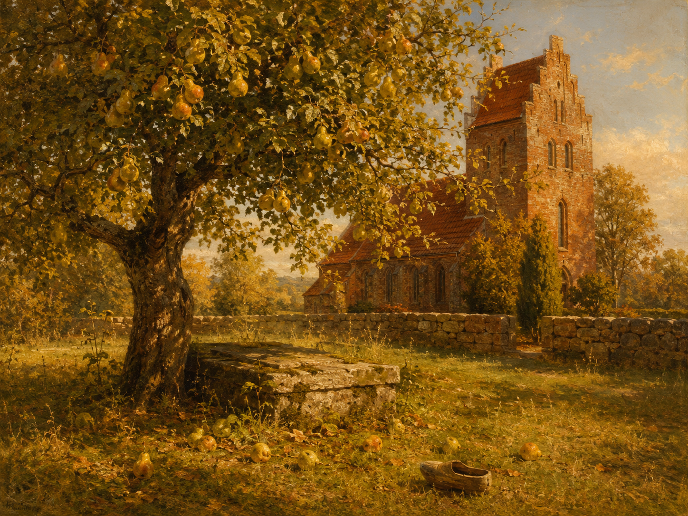

Herr von Ribbeck auf Ribbeck im Havelland,
德语贵族称谓的完整格式：头衔 + von + 家族名 + auf + 领地名 + 地区名。auf Ribbeck 指他所领有的庄园。das Havelland 是勃兰登堡州哈弗尔河沿岸的地区。这一长串称谓在全诗首尾各出现一次，构成框架；朗读时的庄重与内容的家常形成反差，正是这首诗幽默感的来源。
哈弗尔兰的里贝克庄园的里贝克老爷
《诗集》（1898年版）·「画与叙事诗」·「德意志·马克—普鲁士题材」
现实主义
1889年作，1889年首次发表

图片由 AI 生成
Herr von Ribbeck auf Ribbeck im Havelland,
德语贵族称谓的完整格式：头衔 + von + 家族名 + auf + 领地名 + 地区名。auf Ribbeck 指他所领有的庄园。das Havelland 是勃兰登堡州哈弗尔河沿岸的地区。这一长串称谓在全诗首尾各出现一次，构成框架；朗读时的庄重与内容的家常形成反差，正是这首诗幽默感的来源。
Und kam die goldene Herbsteszeit
此处的倒装（动词在前、主语在后）不是疑问句，而是德语中省略了 wenn 的条件/时间从句："Und kam …" = "Und wenn … kam"（每当……来临时）。全诗四次使用这一结构（第3、7、9、37、39行），是叙事诗特有的推进节奏。Herbsteszeit 中的 -es- 为旧式连接成分。
Da stopfte, wenn's Mittag vom Turme scholl,
scholl 是 schallen（响起）的强变化过去时（今日多用弱变化 schallte）。wenn's = wenn es。stopfen（塞、填）+ 第四格；"sich die Taschen voll stopfen" 意为"把口袋塞满"，其中 sich 是第三格（为自己）。
Und kam in Pantinen ein Junge daher,
die Pantinen 是北德词，指木底鞋、木屐——一个把男孩的农家出身一笔点明的细节。daherkommen（走过来）为可分动词，前缀 daher 在此已并入。
So rief er: „Junge, wiste 'ne Beer?“
全诗第一句低地德语（Plattdeutsch）。wiste = willst du（你想要吗），'ne Beer = eine Birne（一个梨；低地德语中 Beer 与高地德语 Birne 同源）。里贝克对孩子说话时切换到方言，对读者叙述时用标准德语——这一语言切换本身就是他与农家孩子亲近的证据。
Kumm man röwer, ick hebb 'ne Birn.“
低地德语，标准德语作 "Komm nur herüber, ich habe eine Birne"（过来吧，我有个梨）。man 在低地德语中是语气词"就、尽管"（≠ 标准德语的不定代词 man）；röwer = herüber；ick = ich；hebb = habe。注意此处用 Birn 而非上一行的 Beer，两个词在诗中交替出现。
So ging es viel Jahre, bis lobesam
lobesam 是古雅词，意为"值得称道的、可敬的"（lob- 赞美 + -sam），今日已完全废弃，只在仿古文体中出现。它修饰下一行的主语，被跨行分隔——冯塔纳借这个老词赋予老爷一种民谣式的庄重。
Da sagte von Ribbeck: „Ich scheide nun ab.
abscheiden（离世）是雅语兼宗教用语，今多作 dahinscheiden 或 verscheiden；die Abgeschiedenen 指亡者。老爷用的是体面的书面语，而不是方言——他在自己的死亡面前恢复了身份。
Alle Bauern und Büdner mit Feiergesicht
der Büdner 是北德/东德的历史用语，指只有小屋和一小块地的贫农（较 Bauer 更低一层），今已随其所指的社会阶层一同消失。das Feiergesicht（庄重的神情）是冯塔纳自造的复合词。
Sangen „Jesus meine Zuversicht“,
这是一首真实存在的德国新教葬礼圣诗（作于17世纪，通常归于奥托·冯·施韦林或路易丝·亨莉埃特选帝侯夫人），至今仍收录于《福音赞美诗集》。冯塔纳直接引用歌名，读者一听便知场景。
„He is dod nu. Wer giwt uns nu 'ne Beer?“
孩子们的低地德语，标准德语作 "Er ist tot nun. Wer gibt uns nun eine Birne?"（他现在死了。现在谁给我们梨呢？）he = er；is dod = ist tot；giwt = gibt。孩子们对老爷之死的全部理解就是"没有梨了"——这句天真到近乎无情的话，是全诗最动人的一处。
Der neue freilich, der knausert und spart,
der neue 指继承庄园的儿子。knausern（吝啬、抠门）是口语动词，与 sparen（节省）并列时构成贬义递进：节省未必是缺点，抠门则是。freilich 在此为语气词"诚然、的确"。
Der wußte genau, was damals er tat,
wußte 为旧拼法（今 wusste）。请注意从句语序 "was damals er tat"：正常应作 "was er damals tat"，此处把状语 damals 提到主语之前，是为凑韵与节奏而作的诗歌语序（部分版本正作 "was er damals tat"，详见校对记录）。
Ein Birnbaumsprößling sproßt heraus.
der Sprößling（幼苗、后代，旧拼法，今 Sprössling）与动词 sprossen（发芽）构成同源反复。此词兼指"树苗"与"子嗣"——老爷真正的后代不是那个吝啬的儿子，而是这棵从他坟里长出来的树。这是全诗的转折点，也是它的核心讽喻。
So flüstert's im Baume: „Wist 'ne Beer?“
flüstert's = flüstert es（形式主语 es，"树里有什么在低语"）。与第8行相比，说话的主语从"他"（er rief）变成了无人称的"它"（es flüstert）——老爷的声音已经变成了树的声音。此处低地德语作 Wist（Zeno 版），另有版本作 Wiste，详见校对记录。
Kumm man röwer, ick gew di 'ne Birn.“
与第10行几乎完全相同，唯一的变化是 ick hebb（我有）变成了 ich gew di（我给你）——从"我有"到"我给"。另需注意：Zeno 版此处作标准德语的 ich，而第10行作低地德语的 ick；部分版本两处统一作 ick，详见校对记录。
So spendet Segen noch immer die Hand
Segen spenden（施予祝福/恩惠）是带宗教色彩的固定搭配，通常用于神职人员的祝祷。冯塔纳把它用在一棵梨树上——恩惠不来自教会，而来自一个老人生前的一点慷慨。主语 die Hand 后置于动词，其第二格修饰语要到最后一行才出现。
| Infinitiv | Präsens 3. Sg. |
Präteritum | Perfekt | Partizip II | Konjunktiv II | Hilfsverb |
|---|---|---|---|---|---|---|
| schallen | schallt | schallte / scholl | hat geschallt | geschallt | schallte / schölle | haben |
| ↳ 强弱两套形式并存，今日以弱变化 schallte 为常；诗中用较古的强变化 scholl。 | ||||||
| stopfen | stopft | stopfte | hat gestopft | gestopft | stopfte | haben |
| ↳ 诗中构成 "sich die Taschen voll stopfen"，其中 sich 为第三格（为自己）、die Taschen 为第四格。 | ||||||
| abscheiden | scheidet ab | schied ab | ist abgeschieden | abgeschieden | schiede ab | sein |
| ↳ 可分动词，强变化（ei–ie–ie）；诗中现在时 "Ich scheide nun ab" 用作近未来（我这就要走了）。 | ||||||
| tragen | trägt | trug | hat getragen | getragen | trüge | haben |
| ↳ 强变化，现在时单数变元音 a→ä；诗中过去时复数 Trugen 置于句首（因状语在前）。 | ||||||
| sich wölben | wölbt sich | wölbte sich | hat sich gewölbt | gewölbt | wölbte sich | haben |
| ↳ 反身动词，意为"拱起、撑成穹形"；名词 die Wölbung（拱形）、das Gewölbe（穹顶）。 | ||||||
| spenden | spendet | spendete | hat gespendet | gespendet | spendete | haben |
| ↳ 弱变化；除 Segen spenden 外还有 Blut/Geld spenden（献血/捐款）、Beifall spenden（鼓掌）。 | ||||||
Und kam die goldene Herbsteszeit … Und kam in Pantinen ein Junge daher, / So rief er: …
„Junge, wiste 'ne Beer?“ ／ „Kumm man röwer, ick hebb 'ne Birn.“
第1—32行用过去时（stand, rief, sagte, wußte）；第33行起转为现在时（gehen, wölbt, leuchtet's, flüstert's, spendet）
So spendet Segen noch immer die Hand / Des von Ribbeck auf Ribbeck im Havelland.
《哈弗尔兰的里贝克庄园的里贝克老爷》作于1889年，是德语中最著名的叙事诗之一，几乎每个德国孩子都在小学背过。冯塔纳当时正在写作他的《马克勃兰登堡漫游记》，对这一地区的传说与家族史非常熟悉。
故事有真实的原型：汉斯·格奥尔格·冯·里贝克（1689—1759）。这个故事最早出现在卡尔·爱德华·哈泽1887年编的《鲁平伯爵领传说集》中。而更惊人的是后续：里贝克家族墓穴上确实长出过一棵梨树，一直长到1911年被一场风暴连根拔起；它的残株今天保存在勃兰登堡州瑙恩市里贝克村的村教堂里。1990年代村里又重新种下了一棵梨树。
诗的构造是一个关于遗产的讽喻：真正被继承下来的不是庄园和爵位（它们落到了吝啬的儿子手里），而是一个习惯——给路过的孩子一个梨。老人早就不信任儿子，于是把"遗产"埋进了自己的坟里。这是冯塔纳式的智慧：对普鲁士容克阶层，他既不美化也不控诉，只是让一棵树替他做出判断。
第四节的时态转换值得注意：前三节是过去时的故事，第四节转入现在时——树还在，还在给梨。而说话的主语也变了：从"他喊道"变成"树里低语着"。老爷本人早已消失，留下的只是那个动作本身。全诗最后一行回到开篇的完整称谓，构成一个闭合的环。
中文译文为本站学习译文（AI 辅助），采用直译。三处需要说明：(1) 全诗的低地德语对白（约占六行）在中文中无法用某一种方言对应而不引入误导性的地域联想，译文一律译出其含义，并在逐行注释与词汇表中给出标准德语对照，请学习者结合朗读体会原文的语言切换；(2) 第10行 "ick hebb 'ne Birn"（我有个梨）与第40行 "ich gew di 'ne Birn"（我给你个梨）只差一个动词，是全诗的关键呼应，译文严格保持了"我有"与"我给"的对照；(3) 首尾两行的完整贵族称谓在中文中冗长而不自然，但译文照样保留，因为这一"合龙"结构是诗的骨架。已知此诗存在多个中文译本，因版权原因本站不转载具体译本全文。
德文正文以 Zeno.org 转录的 Nymphenburger 版《冯塔纳全集》第20卷（第249—251页）为主来源，与 gedichte7.de 逐行核对，两来源行数一致（四十二行），分节为 10/12/10/10（主来源连续排印，分节依辅助来源并与通行版本一致）。核实到的差异较多，本站一律从主来源，现如实列出：(1) 第9行与第39行：主来源作 Mädel，辅助来源第9行作 Mädchen、第39行作 Mädel。(2) 第29行：主来源作 "was damals er tat"（状语前置的诗歌语序），辅助来源作 "was er damals tat"（常规语序）。(3) 第38行：主来源作 „Wist 'ne Beer?“，辅助来源作 „Wiste 'ne Beer?“（与第8行统一）。(4) 第40行：主来源作低地德语中夹标准德语的 "ich gew di"，辅助来源作全低地德语的 "ick gew di"——第10行两来源均作 ick，因此主来源在此处的 ich 是否为排印之误，本站未能判定，属待核实项。(5) 第3行与第35行：主来源作 goldene，辅助来源作 goldne（少一音节）。(6) 第17行：主来源作 "Und drei Tage drauf, aus dem Doppeldachhaus,"，辅助来源作 "Und drei Tage darauf aus dem Doppeldachhaus"。(7) 大小写：主来源每行行首一律大写（19世纪排印惯例），辅助来源仅句首大写。(8) 主来源在 der neue / der alte 处使用斜体强调，本站因纯文本呈现而未保留该排版特征。此外，本站未直接查阅1889年首刊或1898年《诗集》影印件，上述采择依据全集转录；第40行 ich/ick 的问题尤其建议对照原刊核实。
【来源独立性复核（2026年8月）】本站在第四批录入时发现并确认：本诗所引 gedichte7.de 与 zgedichte.de 属同一运营方（Heiko Possel），依 SOURCES.md 规则 B 不可充当两个必需来源之一，且依第 4 节属三级来源；去掉三级来源后，本诗仅剩 1 个独立来源组（zeno）。需要说明的是，本诗的德文正文此前**并非只有单一来源**——上列各来源之间的逐词比对确已完成，比对结果如上文所载，本站不撤回任何已记录的比对结论。但按本项目现行的《来源独立性规范》（见仓库根目录 SOURCES.md），本诗的来源配置尚未达标，**补入一个额外的独立来源属未完成事项**，已列入下方 checklist。在补齐之前，请读者将本诗的文本可信度视为低于本站其他已达标条目。 【2026-08 补验证】依 SOURCES.md 规则 B，原有两个来源中 gedichte7.de 属三级来源，故补入第三个独立来源 deutschelyrik.de（二级）。逐行比对：行数、分节完全一致，用词与 Zeno 主来源基本相同，另有以下发现。（甲）本站正文已据此修订一处：第40行原从 Zeno 作 ich gew di，但 deutschelyrik.de 与 gedichte7.de 均作 ick。此处是梨树以低地德语（Plattdeutsch）说的引语，同一诗第10行为 ick hebb 'ne Birn，Zeno 本身在此并不自洽；高地德语 ich 不可能出现在这句低地德语里。三来源二比一，且有内证，故判定 Zeno 该处为转录讹误，正文改作 ick gew di —— 这是文献判断，不是编辑偏好。（乙）第38行 Zeno 作 Wist 'ne Beer?，另两来源作 Wiste 'ne Beer?（同第8行）。与（甲）不同，Wist / Wiste 皆为合法的低地德语形式，不构成内在矛盾，属真实版本异文，故正文仍从 Zeno 的 Wist，此处如实备案。（丙）deutschelyrik.de 用书名号 »…«，本站与 Zeno 用德式引号，同为德语规范，不视为异文。（丁）第28行 deutschelyrik.de 作 Mißtraun（缩略，更合音步），本站从 Zeno 作 Mißtrauen。（戊）第14行行末 deutschelyrik.de 用分号，本站从 Zeno 用逗号；第31行 deutschelyrik.de 无逗号，本站从 Zeno 作 Und im dritten Jahr, aus dem stillen Haus。以上标点差异不影响语义。（己）第23行破折号：deutschelyrik.de 用半长破折号，本站用长破折号，属排印惯例差异。